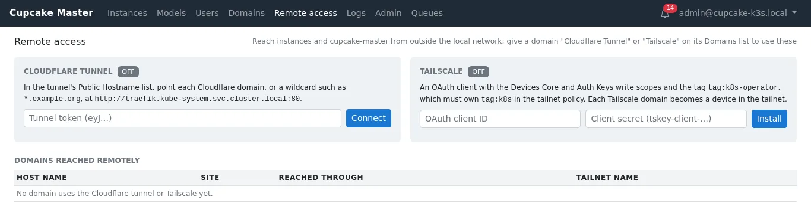

Remote access, in the top menu (staff only), connects the cluster to a Cloudflare tunnel or to Tailscale. A domain then uses it when it is given the "Cloudflare Tunnel" or "Tailscale" route on its domains list.

Cloudflare Tunnel
- In Cloudflare Zero Trust, create a tunnel and copy its token.
- Paste the token here and choose Connect.
- In the tunnel's Public Hostname list, point each Cloudflare domain, or a wildcard such as
*.example.org, at the address shown on this page. - Give the domain the "Cloudflare Tunnel" route.
Tailscale
A Tailscale domain becomes its own device on your tailnet, such as lab1.tail1234.ts.net, with a certificate from
Tailscale.
- In the Tailscale admin console, under Settings, OAuth clients, create a client with the Devices (Core) and Auth
Keys write scopes and the
tag:k8s-operatortag. Your tailnet policy must lettag:k8s-operatorowntag:k8s. - Enter the client ID and secret here; cupcake-master installs the Tailscale operator.
- Add the domain, for example
lab1.tail1234.ts.net, and give it the "Tailscale" route.
On a Pi cluster, the Pi itself can also join your tailnet with an auth key in cupcake-tailscale.txt; see
setting up a Pi cluster.